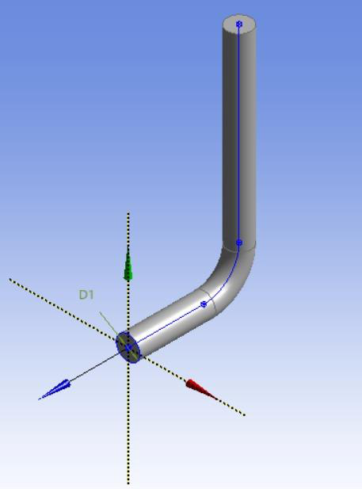
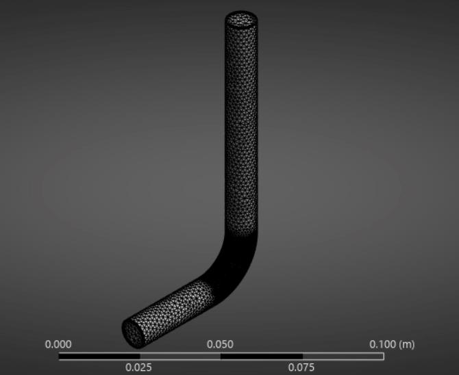
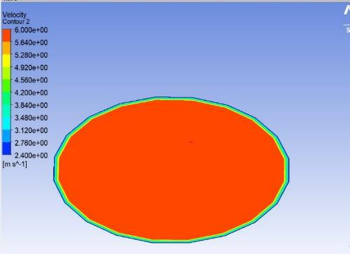
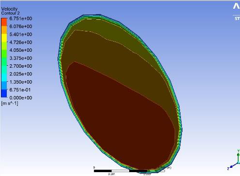
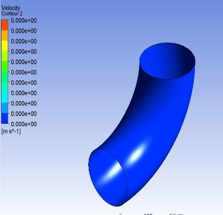
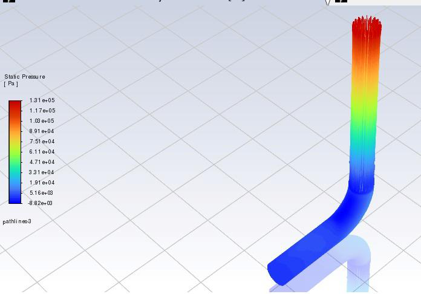
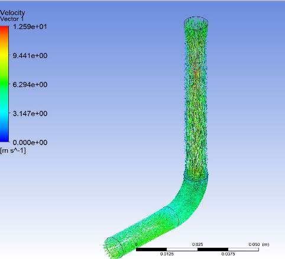
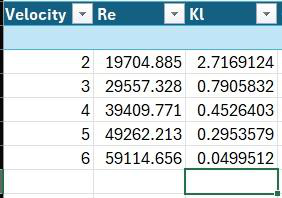
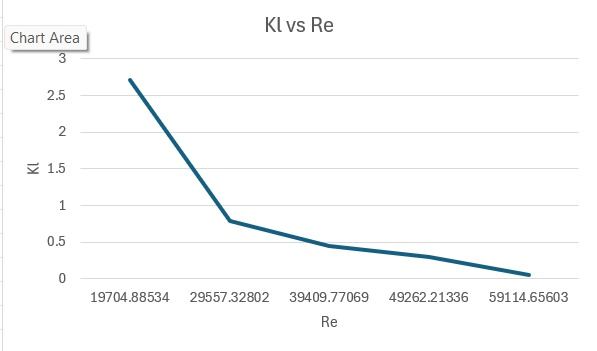
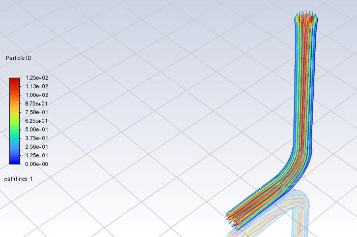

Project overview
Curved pipes are common in fluid distribution systems, but changing the direction of flow introduces cross-stream pressure gradients and redistributes momentum. This project examines these effects using a three-dimensional elbow model. Its original report documents geometry construction and meshing in ANSYS ICEM CFD, a Fluent numerical solution, and visualization using CFD-Post. Reported outputs include velocity and pressure contours, velocity vectors, pressure-colored pathlines, a solver residual plot, and a Reynolds-number versus loss-coefficient comparison.
The objective is to interpret how curvature modifies an otherwise more uniform inlet flow, identify potential low-velocity regions, and evaluate the numerical evidence for losses and secondary flow. The observations shown below are extracted directly from the submitted report, while numerical inconsistencies are highlighted rather than silently repeated.
Geometry, mesh and computational setup
According to the report, the geometry uses a 10 mm internal diameter, 15 mm bend radius, 80 mm height, and 32 mm length. Mesh statistics and orthogonality are reported but not independently validated from the native solver model.

The L-shaped flow domain consists of two straight cylindrical segments joined by a smooth elbow. The report specifies a 10 mm diameter, an 80 mm height, a 32 mm length, and a 15 mm bend radius. These dimensions define the curvature responsible for changes in pressure and velocity.

The report describes a structured 3D mesh with 109,213 cells and 36,954 nodes, and claims orthogonal quality above 0.95. Near-wall refinement is intended to resolve the velocity gradient, but a mesh-independence study is not supplied.
| Input / reported metric | Value | Source context |
|---|---|---|
| Pipe diameter | 10 mm | Report page 5 |
| Bend radius | 15 mm | Report page 5 |
| Pipe height | 80 mm | Report page 5 |
| Reported length | 32 mm | Report page 5 |
| Mesh cells | 109,213 | Report page 6 |
| Mesh nodes | 36,954 | Report page 6 |
| Orthogonal quality | > 0.95 claimed | Report page 6 |
| Inlet speed used in calculations | 6 m/s | Report page 13 |
| Density / dynamic viscosity | 988.2 kg/m³ / 0.001003 Pa·s | Report page 13 |
Velocity, pressure, vectors and trajectories
Figures 2.3–2.9 compare the inlet and outlet distributions, the elbow velocity field, pressure contours, and the change in flow direction. The interpretation of each screenshot is written beneath the actual extracted image, not a recreated contour.

The inlet shows a comparatively uniform velocity distribution. This provides a baseline against which the downstream cross-sectional asymmetry can be assessed; the image alone does not establish the turbulence intensity or velocity profile quantitatively.

The velocity contour becomes nonuniform after the bend, consistent with redistribution driven by curvature. This suggests secondary-motion effects, but quantifying Dean vortices would require sectional velocity vectors or vorticity data.

Velocity varies across the elbow, with lower-speed regions near portions of the inner wall. The contour supports a qualitative statement about redistribution; it does not, by itself, prove flow separation.

The color field displays pressure variation along the curved geometry. The bend changes the pressure distribution across the section; a robust pressure-loss coefficient would require verified inlet/outlet area-averaged pressures and consistent units.

Pathlines provide a spatial depiction of the pressure encountered along selected trajectories. Local pressure recovery and overall irreversible pressure loss should be distinguished; pathline colors are not a substitute for a measured total-pressure loss.

The vectors change direction through the elbow. Their distribution illustrates turning and velocity-gradient effects; a cross-sectional view would be needed to verify the two-cell circulation pattern associated with Dean vortices.

Velocity arrows show the primary flow moving through the straight portions and bend. The directional change and relative vector lengths support the discussion of curvature-induced profile distortion.
Loss coefficient, Reynolds number and convergence
The report tabulates five Reynolds numbers and local loss coefficients, reproduced below exactly as reported. These are reported values, not independently verified simulation outputs.
| Velocity (m/s) | Reynolds number | Reported KL |
|---|---|---|
| 2 | 19,704.885 | 2.7169124 |
| 3 | 29,557.328 | 0.7905832 |
| 4 | 39,409.771 | 0.4526403 |
| 5 | 49,262.213 | 0.2953579 |
| 6 | 59,114.656 | 0.0499512 |

The report lists five inlet velocities from 2 to 6 m/s, associated Reynolds numbers, and reported loss coefficients. The final reported coefficient is arithmetically inconsistent with the stated pressure value; see the verification note below.

This chart reproduces the five tabulated reported points, with a steep decrease in the reported loss coefficient as Reynolds number increases. Because the input loss coefficients are not independently validated, the trend must not be treated as a verified hydraulic correlation.

Continuity, three momentum components, turbulent kinetic energy and dissipation residuals generally decline over 20 iterations. Declining residuals indicate numerical progress, but convergence cannot be established definitively without specified thresholds and integral mass-flow balance.

The streamline visualization shows the fluid following the elbow geometry, with changing direction around the bend. Any claim of definite separation or Dean-vortex strength would require additional cross-sectional/near-wall evidence.

Pathlines illustrate trajectories entering the model and negotiating the curvature. This result complements the velocity and streamline views, but the figure does not provide independent numerical verification of the losses.
Reported takeaways
The velocity plots suggest curvature-induced redistribution of momentum and nonuniform downstream profiles. The residuals generally decline during the 20 displayed iterations, but residual reduction alone does not establish a fully converged CFD model. A robust follow-up would verify mass balance, pressure boundary conditions, and a mesh-independence study; these verification datasets are not supplied with the report.
Interpretation and limitations
The original report discusses Dean vortices, separation, pressure loss and turbulence. These physical effects are plausible for curved-pipe flow, but the supplied images do not establish their magnitudes quantitatively. A clear claim of two-cell Dean-vortex structure would require cross-sectional velocity or vorticity plots; separation would need wall-shear or velocity reversal evidence. The report also contains some different descriptions of whether separation occurs, so this page labels that behavior as possible rather than confirmed.
Numerical values are attributed to the report. No ANSYS case/data files, mesh file, or MATLAB scripts accompanied this PDF, so no working solver or MATLAB code is claimed or linked.
Original documentation
The full, unmodified report contains the 20 original pages, equations, cited references and all figures. The 14 individual technical images are also included as standalone files in this GitHub package.
Source-code availability: not supplied. ANSYS project files and MATLAB scripts were not included in this upload.